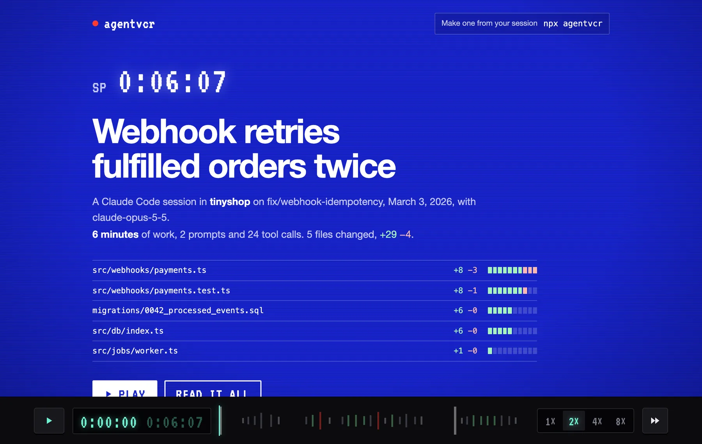
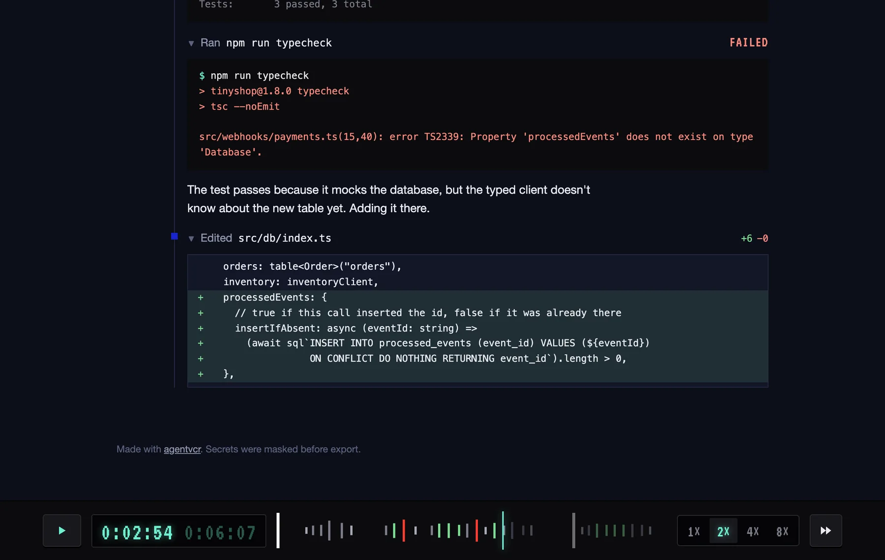
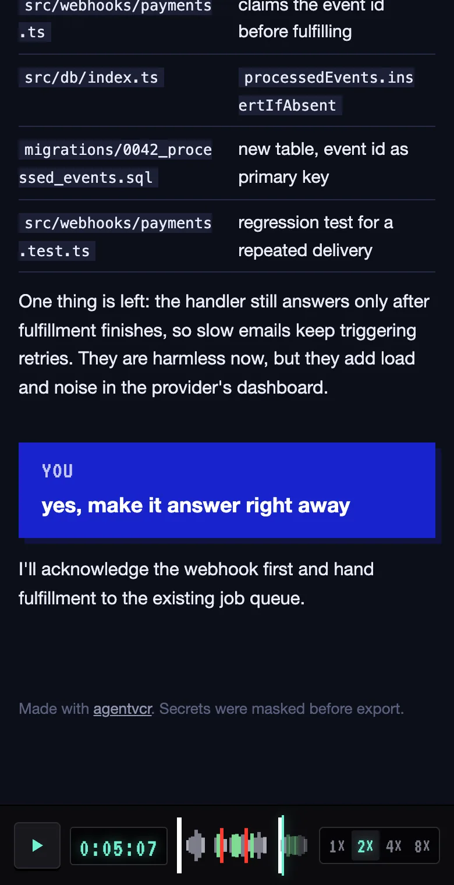
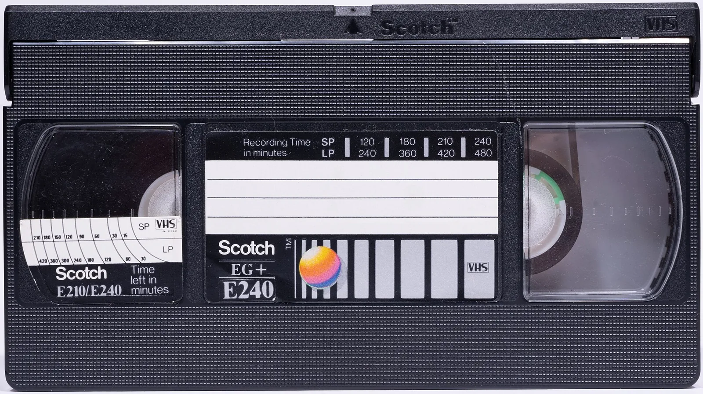

What leaves your machine
agentvcr masks secrets before it writes a single byte. Switch a rule off to see what it would let through.
The same rules run on every replay you make, and the CLI tells you how many things it masked.
Everything a reviewer needs
The story in one sentence
Before playback: what happened, how long it took, and a diffstat of every file. Click a file to jump to its first edit.

The whole session as a tape
Every prompt, edit and failure is a bar under the player. Drag anywhere to scrub; the counter shows real working time.
Failures stand out
A failed command turns red on the tape and in the transcript, so you see where the agent changed course.

Watch at your pace
One, two, four or eight times speed, one click each, or keys 1 to 4. Space plays and pauses.
Link to the exact moment
Every step has an address. Send someone straight to the failing test instead of telling them where to scroll.
One file, any screen
Works offline, on a phone, in dark and light. Attach it to an issue or drop it on any static host.

Works with the agentyou already use
~/.claude/projectsRead straight from disk. Pick a session from the folder you are in, or any with --all.
Prompts, answers, every tool call with its output, diffs, plansSubagent turns too, with --subagents.
Real working time from the timestampsBreaks over five minutes count as away, not as work.
/plugin marketplace add tojacob03/agentvcrThen /agentvcr:replay inside any session, or /agentvcr:replay share for a link.
~/.codex/sessionsMatched to your project by the working folder each rollout records.
Prompts, answers, shell commands with output, apply_patch diffs, plansReasoning summaries too, with --thinking.
Real working time from the timestampsFailed commands are marked by their exit code.
npx agentvcr lastRun it in the project folder right after the session.
~/.cursor/projects/…/agent-transcriptsThe agent transcripts Cursor writes for each chat.
Prompts, answers, commands, edits as diffs, plansCursor does not store tool output, so commands show without results.
Steps instead of minutesCursor keeps no per-step times; the replay counts steps.
npx agentvcr --allLists sessions from every project and agent, newest first.
~/.gemini/tmp/…/chatsBoth the JSONL format and the older JSON files.
Prompts, answers, shell commands, edits, searches, todosRewinds and edits to earlier messages are applied the way the CLI loads them.
Real working time from the timestampsThoughts appear with --thinking.
npx agentvcr lastRun it in the project folder after the session.

Press record
Run it in any project folder. Add --share for a link, or open the replay and send the file.